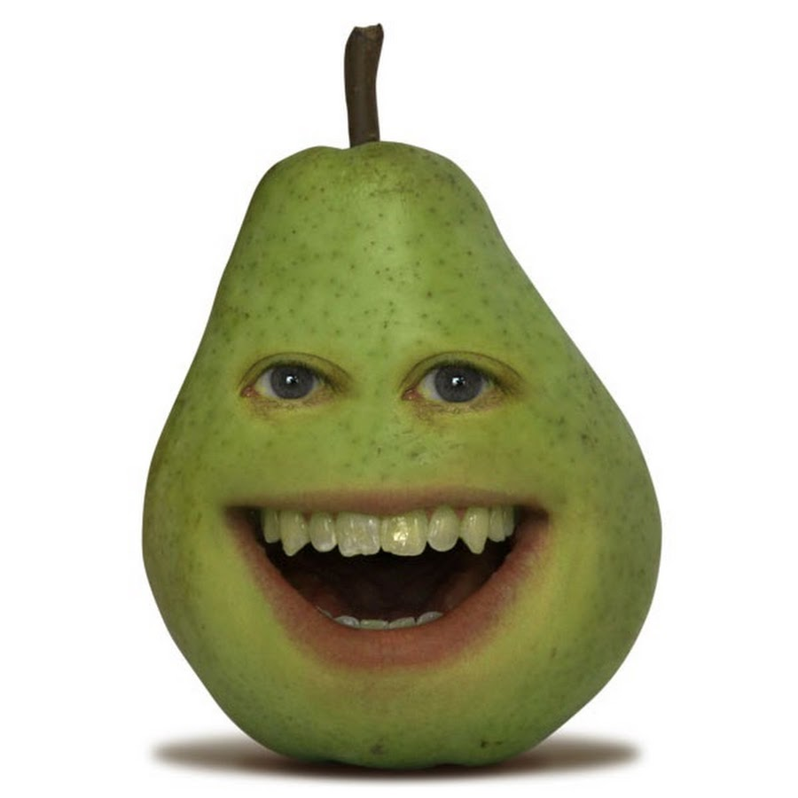

Here are some little fun facts about me.
My given name is David Wiley, but I prefer to go by DJ (they are my initials).

This is a second bachelor's degree for me, my first one was in Exercise Science.
I've never eaten a pear.
And I have two dogs, one is an Australian Shepherd and the other is a PitBull that my wife and I adopted from the shelter.